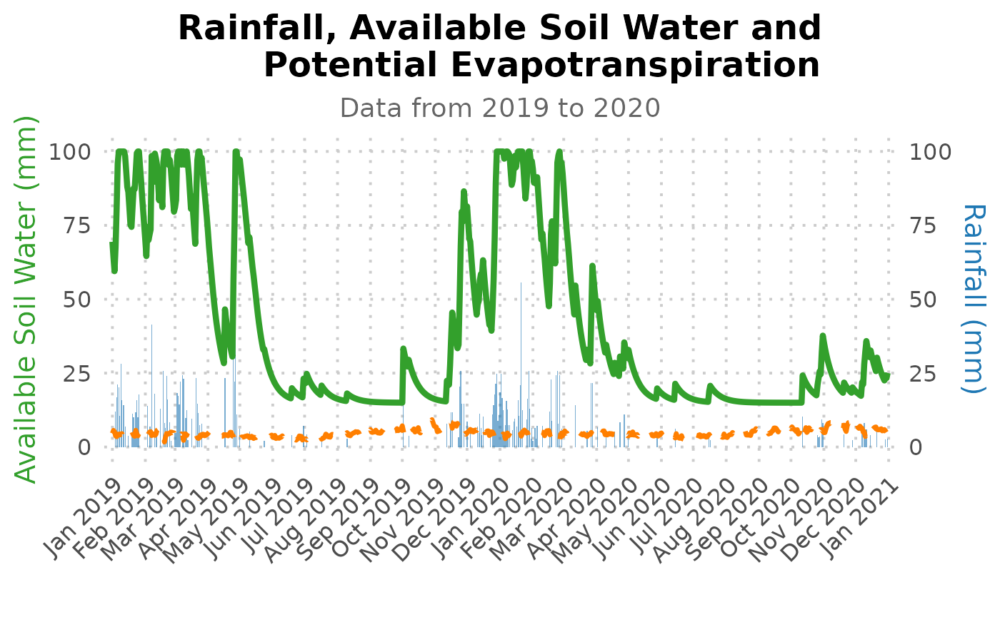

Estimation of rainy season calandar and soil water balance for agricultural crops using AquaBEHER
Robel Takele and Matteo Dell’Acqua
2023-03-29
Source:vignettes/AquaBEHER.Rmd
AquaBEHER.Rmd1. Introduction
This vignette is a short tutorial to the usage and functionalists of AquaBEHER R package. It is directed to first-time package users who are familiar with the basic concepts of R. The vignette presents the use of several key functions of the package, some useful hints and guidelines. AquaBEHER computes and integrates daily reference evapotranspiration (Eto) and a soil water balance model to estimate parameters of crop and soil water balances for agricultural crops. Using the computed daily soil water balance parameters, the package can estimates the rainy season calendar (Onset, Cessation and Duration) based on agroclimatic approach for a predefined window.
2. Installation and Loading
Installing the latest development version from the online repository using the devtools package. Note that to utilize the full functionality of devtools on Windows, Rtools must be installed.
3. Required Climate Data
The methods for calculating evapotranspiration from meteorological data require various physical parameters. Some of the data are measured directly in weather stations. Other parameters are related to commonly measured data and can be derived with the help of a direct or empirical relationship.
The meteorological factors determining evapotranspiration are weather parameters which provide energy for vaporization and remove water vapor from the evaporating surface. The principal weather parameters to consider are presented below.
- Maximum temperature
- Minimum temperature
- Solar radiation
- Dew point temperature or relative humidity
- Wind speed
In addition, georeferenced information on the location of the climate record is required:
- Latitude
- Longitude
- Elevation
data(AgroClimateData)
str(AgroClimateData)
#> 'data.frame': 14975 obs. of 14 variables:
#> $ GridID: chr "MOZ0007149" "MOZ0007149" "MOZ0007149" "MOZ0007149" ...
#> $ Lat : num -15.1 -15.1 -15.1 -15.1 -15.1 ...
#> $ Lon : num 39.3 39.3 39.3 39.3 39.3 ...
#> $ Elev : num 392 392 392 392 392 ...
#> $ WHC : num 97.8 97.8 97.8 97.8 97.8 ...
#> $ Year : num 1982 1982 1982 1982 1982 ...
#> $ Month : num 1 1 1 1 1 1 1 1 1 1 ...
#> $ Day : num 1 2 3 4 5 6 7 8 9 10 ...
#> $ Rain : num 0 0 0 1.91 0 ...
#> $ Tmax : num 32.2 33.1 33.5 32.8 32.7 ...
#> $ Tmin : num 23.1 23.1 23.1 23.6 22.8 ...
#> $ Rs : num 23.9 26.4 25 24.2 23.4 ...
#> $ Tdew : num 20.2 20.5 20.5 20.8 21.4 ...
#> $ Uz : num 4.72 4.28 3.62 2.54 1.48 ...
head(AgroClimateData)
#> GridID Lat Lon Elev WHC Year Month Day Rain
#> 1 MOZ0007149 -15.09238 39.2519 392.1337 97.84914 1982 1 1 0.000000
#> 2 MOZ0007149 -15.09238 39.2519 392.1337 97.84914 1982 1 2 0.000000
#> 3 MOZ0007149 -15.09238 39.2519 392.1337 97.84914 1982 1 3 0.000000
#> 4 MOZ0007149 -15.09238 39.2519 392.1337 97.84914 1982 1 4 1.907393
#> 5 MOZ0007149 -15.09238 39.2519 392.1337 97.84914 1982 1 5 0.000000
#> 6 MOZ0007149 -15.09238 39.2519 392.1337 97.84914 1982 1 6 0.000000
#> Tmax Tmin Rs Tdew Uz
#> 1 32.24396 23.11500 23.86698 20.21160 4.723783
#> 2 33.07202 23.12585 26.38375 20.48284 4.279407
#> 3 33.49679 23.12602 25.00704 20.45689 3.622179
#> 4 32.76818 23.60351 24.16475 20.83896 2.535047
#> 5 32.65872 22.79294 23.44483 21.36882 1.477617
#> 6 31.80630 22.43975 21.99277 21.29297 1.9534154. Potential Evapotranspiration
For many agricultural applications, it is relevant to get an estimate of the potential evapotranspiration (PET). Different methods are developed for estimating Eto. Most of them use empirical equations to determine the value of PET from weather variables. The AquaBEHER package provides options for estimating reference evapotranspiration (Eto) using the FAO Penman-Monteith, Priestley Taylor and Hargreaves-Samani formulations.
Usage
calcEto(AgroClimateData, method = “PM”, crop = “short”)
- The function give a list of
- daily estimations of Eto in (mm/day)
- daily estimations of extraterrestrial radiation (MJ/m2/day)
- daily estimations of slope of vapor pressure curve (kPa/°C)
Example
The calcEto compute with inputs of data frame containing daily values of meteorological parameters:
PET <- calcEto(AgroClimateData, method = "PM", crop = "short")
str(PET)
#> List of 7
#> $ ET.Daily : num(0)
#> $ Ra.Daily : num [1:14975] 40.9 40.9 40.9 40.9 40.9 ...
#> $ Slope.Daily : num [1:14975] 0.217 0.221 0.224 0.222 0.217 ...
#> $ Ea.Daily : num [1:14975] 2.37 2.41 2.41 2.46 2.54 ...
#> $ Es.Daily : num [1:14975] 3.82 3.94 4 3.94 3.85 ...
#> $ ET.formulation: chr "Penman-Monteith FAO56"
#> $ ET.type : chr "Reference Crop ET"Graphical comparison of the evapotranspiration (mm/day) calculated using the FAO Penman–Monteith formulation and the Hargreaves-Samani formulation:
# Compute Eto using hargreves-samani formulation using the example data from 'AgroClimateData':
data(AgroClimateData)
Eto.HS <- calcEto(AgroClimateData, method = "HS")
# Now compute Eto using Penman-Monteith formulation for hypothetical grass (short crop):
Eto.PM <- calcEto(AgroClimateData, method = "PM", Zh = 10)
plot(Eto.PM$ET.Daily[1:1000], ty="l", xlab="Days since 1996", ylab="Eto (mm/day)", col="black", lwd = 1, lty = 2)
lines(Eto.HS$ET.Daily[1:1000], col="blue", lwd = 2, lty = 1)
legend("bottom",c("Eto: Penman–Monteith ","Eto: Hargreaves-Samani"),
horiz=TRUE, bty='n', cex=1,lty=c(2,1),lwd=c(2,2), inset=c(1,1),
xpd=TRUE, col=c("black","blue"))
Notice: It appears that the FAO Penman–Monteith formulation presents enhanced day-to-day variations of evapotranspiration than the the Hargreaves-Samani formulation.
5. Soil Water Balance
This function perform daily computations of soil water balance parameters for the root zone. Soil water changes daily in response to rainfall, evapotranspiration, runoff and deep drainage.
Assumptions
- Atmospheric conditions affect the rate at which crops use water.
- The soil has uniform cross-section of homogeneous volume with a measured depth and a unit area.
- A well-established, dense grass crop is growing, which completely covers the soil surface.
Example
The calcWatBal compute with inputs of data frame containing daily values of Rain, Eto and soil water holding capacity.
PET <- calcEto(AgroClimateData, method = "PM", Zh = 10)
# Add the estimated PET 'ET.Daily' to a new column in AgroClimateData:
AgroClimateData$Eto <- PET$ET.Daily
# Estimate daily water balance for the soil having 100mm of WHC:
soilWHC <- 100
watBal<- calcWatBal(data = AgroClimateData, soilWHC)
str(watBal )
#> 'data.frame': 14975 obs. of 20 variables:
#> $ GridID: chr "MOZ0007149" "MOZ0007149" "MOZ0007149" "MOZ0007149" ...
#> $ Lat : num -15.1 -15.1 -15.1 -15.1 -15.1 ...
#> $ Lon : num 39.3 39.3 39.3 39.3 39.3 ...
#> $ Elev : num 392 392 392 392 392 ...
#> $ WHC : num 97.8 97.8 97.8 97.8 97.8 ...
#> $ Year : num 1982 1982 1982 1982 1982 ...
#> $ Month : num 1 1 1 1 1 1 1 1 1 1 ...
#> $ Day : num 1 2 3 4 5 6 7 8 9 10 ...
#> $ Rain : num 0 0 0 0 0 ...
#> $ Tmax : num 32.2 33.1 33.5 32.8 32.7 ...
#> $ Tmin : num 23.1 23.1 23.1 23.6 22.8 ...
#> $ Rs : num 23.9 26.4 25 24.2 23.4 ...
#> $ Tdew : num 20.2 20.5 20.5 20.8 21.4 ...
#> $ Uz : num 4.72 4.28 3.62 2.54 1.48 ...
#> $ Eto : num 6.45 6.8 6.49 5.84 5.23 ...
#> $ R : num 0 0 0 0 0 0 0 0 0.684 1 ...
#> $ AVAIL : num 0 0 0 0 0 ...
#> $ TRAN : num 0 0 0 0 0 ...
#> $ DRAIN : num 0 0 0 0 0 0 0 0 0 0 ...
#> $ RUNOFF: num 0 0 0 0 0 ...
# Plotting the water balance output for the climatological year from 2019 to 2020 using ggplot2:
watBal.19T20 <- watBal[watBal$Year %in% c(2019, 2020),]
date.vec <- as.Date.character(paste0(watBal.19T20$Year, "-", watBal.19T20$Month, "-", watBal.19T20$Day))
ggplot(data = watBal.19T20) +
geom_line(aes(y = AVAIL, x = date.vec, fill = "AVAIL"), size = 0.8, color = "red") +
geom_col(aes(y = Rain, x = date.vec, fill = "Rain"), size = 1) +
scale_x_date(date_breaks = "1 month", date_labels = "%b-%Y") +
scale_fill_manual(name = " ", values = c('AVAIL' = "red", 'Rain' = "blue")) +
scale_y_continuous(expand = c(0, 2)) +
labs(y="Moisture (mm)", x=NULL) +
theme_linedraw() +
theme(axis.title = element_text(size = 14, colour = "black", family = "Times New Roman"),
axis.text = element_text(size = 10, colour = "black", family = "Times New Roman"),
axis.text.x = element_text(size = 10, colour = "black", family = "Times New Roman", angle = 45, vjust = 0.5))
#> Warning: Using `size` aesthetic for lines was deprecated in ggplot2 3.4.0.
#> ℹ Please use `linewidth` instead.
#> This warning is displayed once every 8 hours.
#> Call `lifecycle::last_lifecycle_warnings()` to see where this warning was
#> generated.
#> Warning in geom_line(aes(y = AVAIL, x = date.vec, fill = "AVAIL"), size = 0.8,
#> : Ignoring unknown aesthetics: fill6. Rainy Season Calandar
The onset and cessation dates of the rainy season were determined for
each climatological year Figure 1. The term climatological
year represents the period between two driest periods, which is
traditionally defined based on a calender year starting from the driest
month and has a fixed length of 12 months.

Figure 1. Example of a climatological yea, the onset and cessation windows
Various methods have been developed to estimate the rainy season calendar, i.e. the onset, cessation and duration of the rainy season. Common method used for crop production applications is the agroclimatic approach. As per agroclimatic approach, a normal rainy season (growing season) is defined as one when there is an excess of precipitation over potential evapotranspiration (PET). Such a period meets the evapotransiration demands of crops and recharge the moisture of the soil profile FAO 1977; 1978; 1986). Thus, the rainy season calendar defined accordingly:
Onset
The onset of the rainy season will start on the first day after
onsetWind.start, when the actual-to-potential
evapotranspiration ratio is greater than 0.5 for 7 consecutive days,
followed by a 20-day period in which plant available water remains above
wilting over the root zone of the soil layer.
Cesation
The rainy season will end, cessation, on the first day after
onsetWind.end, when the actual-to-potential
evapotranspiration ratio is less than 0.5 for 7 consecutive days,
followed by 12 consecutive non-growing days in which plant available
water remains below wilting over the root zone of the soil layer.
Duration
The duration of the rainy season is the total number of days from onset to cessation of the season.

Figure 2. Hypotetical example of onset and cessation date determination
Example
Using the example climate data provided by the AquaBEHER package, compute the rainy season calandar:
# seasonal calndar is estimated for the onset window ranges from 01-September to 31-January having a soil with 100mm of WHC
soilWHC <- 100
onsetWind.start <- "1996-09-01" # earliest possible start date of the onset window
onsetWind.end <- "1997-01-31" # the latest possible date for end of the onset window
cessaWind.end <- "1997-06-30" # the latest possible date for end of the cessation window
seasCal.lst <- calcSeasCal(watBal, onsetWind.start, onsetWind.end, cessaWind.end, soilWHC = 100)
str(seasCal.lst)
#> List of 3
#> $ :'data.frame': 40 obs. of 6 variables:
#> ..$ Year : num [1:40] 1982 1983 1984 1985 1986 ...
#> ..$ onset.Year : num [1:40] 1982 1983 1984 1985 1986 ...
#> ..$ onset.Month: num [1:40] 11 12 11 11 11 1 12 11 12 12 ...
#> ..$ onset.Day : num [1:40] 11 11 9 19 20 10 18 13 26 3 ...
#> ..$ onset.JD : num [1:40] 315 345 314 323 324 10 353 317 360 337 ...
#> ..$ onset.Value: int [1:40] 72 102 70 80 81 132 109 74 117 94 ...
#> $ :'data.frame': 40 obs. of 6 variables:
#> ..$ Year : num [1:40] 1982 1983 1984 1985 1986 ...
#> ..$ cessation.Year : num [1:40] 1983 1984 1985 1986 1987 ...
#> ..$ cessation.Month: num [1:40] 5 4 5 5 4 4 5 3 5 5 ...
#> ..$ cessation.Day : num [1:40] 12 18 9 10 22 21 6 15 6 21 ...
#> ..$ cessation.JD : num [1:40] 132 109 129 130 112 112 126 74 126 142 ...
#> ..$ cessation.Value: num [1:40] 255 232 252 253 235 235 249 197 249 265 ...
#> $ :'data.frame': 40 obs. of 4 variables:
#> ..$ Year : num [1:40] 1982 1983 1984 1985 1986 ...
#> ..$ onset.YYYYDOY : chr [1:40] "1982-315" "1983-345" "1984-314" "1985-323" ...
#> ..$ cessation.YYYYDOY: chr [1:40] "1983-132" "1984-109" "1985-129" "1986-130" ...
#> ..$ Duration : int [1:40] 183 130 182 173 154 103 140 123 132 171 ...
# plotting year to year variation of onset cessation and seasonal duration
seasCal.dF <- data.frame(Year = seasCal.lst[[1]][,c("Year")],
Onset = seasCal.lst[[1]][,c("onset.JD")],
Cessation = seasCal.lst[[2]][,c("cessation.JD")],
Duration = seasCal.lst[[3]][,c("Duration")])
ggplot(data = seasCal.dF) +
geom_line(aes(y = Onset, x = Year, color = "Onset"), size = 1) +
geom_line(aes(y = Cessation, x = Year, color = "Cessation"), size = 1) +
geom_area(aes(y = Duration, x = Year, color = "Duration"), size = 0.8, alpha = 0.4)+
scale_color_manual(name = "Calendar", values = c('Onset' = "blue", 'Cessation' = "red", 'Duration' = "grey")) +
labs(y="Day of a year (DOY)", x=NULL) +
theme_bw()
7. References
Allen, R.G.; Pereira, L.S.; Raes, D.; Smith, M. Crop Evapotranspiration: Guidelines for Computing Crop Water Requirements; FAO Irrigation and Drainage Paper no. 56; FAO: Rome, Italy, 1998; ISBN 92-5-104219-5.
Doorenbos, J. and Pruitt, W.O. 1975. Guidelines for predicting crop water requirements, Irrigation and Drainage Paper 24, Food and Agriculture Organization of the United Nations, Rome, 179 p.
Hargreaves, G.H. and Samani, Z.A. (1985) Reference Crop Evapotranspiration from Temperature. Applied Engineering in Agriculture, 1, 96-99.
\[\\[0.2in]\]

The Center of Plant Sciences Group is a geographically and culturally diverse research team working on climate and crop genetics at Scuola Superiore Sant’Anna, Pisa, Italy.
You can contact us sending an email to Matteo Dell’Acqua (mailto:m.dellacqua@santannapisa.it) or Mario Enrico Pè (mailto:m.pe@santannapisa.it). You can also visit the crop genetics (http://www.capitalisegenetics.santannapisa.it/) web page.
We are committed to the free software and FAIR principles. This set of repositories collects our latest developments and provide reusable code.